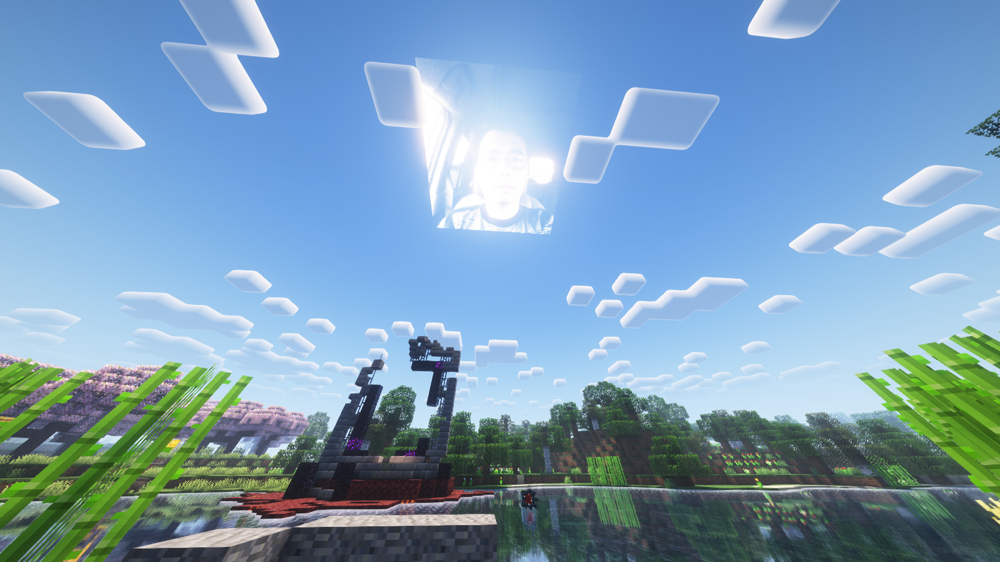
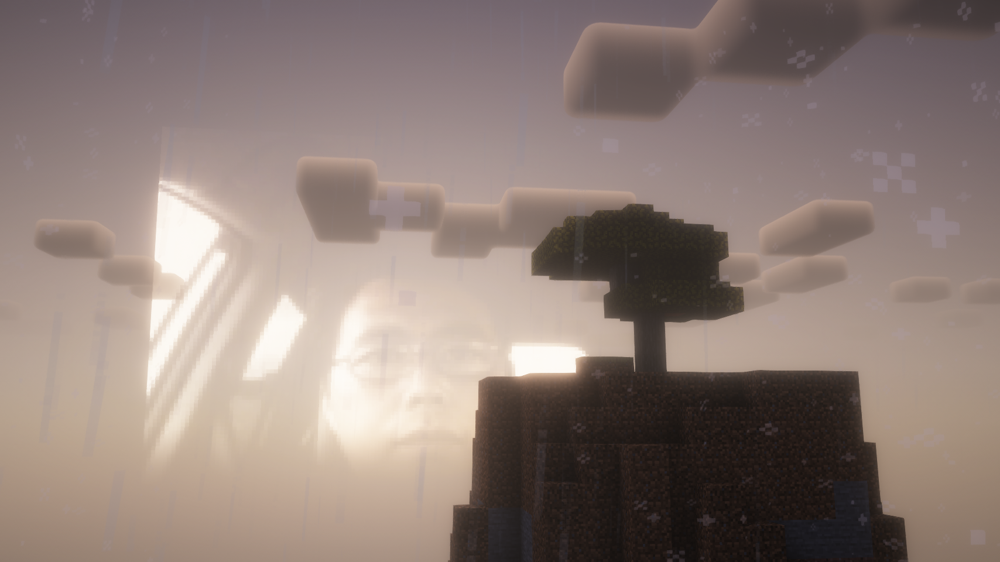
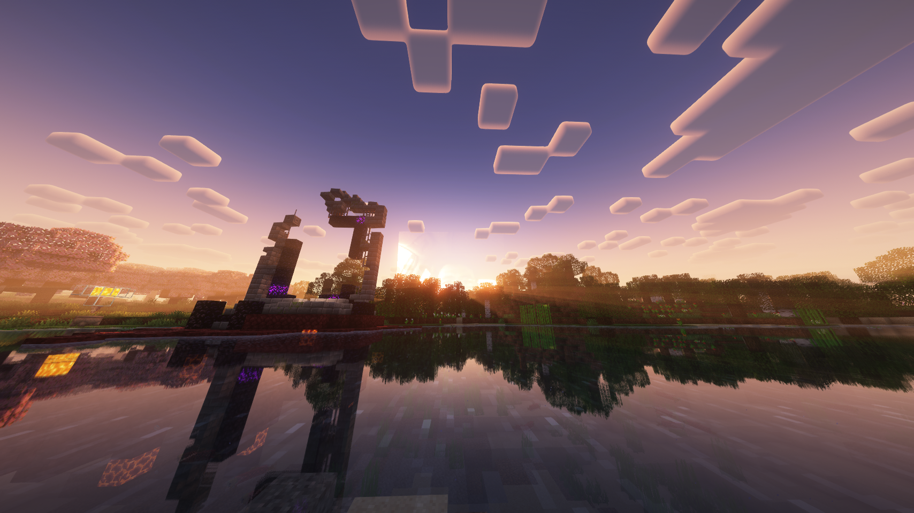

napu sun resource pack gallery
download at bottom, shader used is Complementary Shaders - Reimagined by EminGT

napu sun at noon

napu sun at sunset in rain

napu sun at sunset again but without rain and in front of a forest
the resource pack should work on all minecraft versions